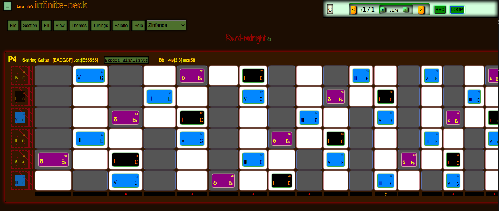
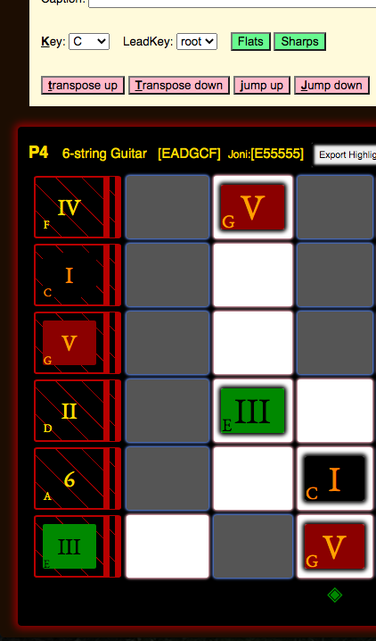

About
This tool, infinite-neck, helps you visualize notes across the neck of your instrument.
The fretboard is displayed as a spreadsheet-like table with cells representing each fret/string position. Clicking on cells puts "notes" on the virtual neck/fretboard, showing where you'll play them on the real fretboard of your instrument. You can add bars and beats, and loop the song. There's music theory baked into the tool, so you can automatically highlight all legal notes in G Mixolydian, for example, with separate sets of colors for chord notes, root, scale notes, passing-tones, and blue-notes.
infinite-neck has the following uses for practice and sharing:
✓ writing down new-to-you and interesting chord fingerings.
✓ capturing a concrete way to play a song.
✓ communicating the fabric of a sound: the possible notes and their moods.
✓ creating art with the patterns of notes, another way to internalize the layout and relationships of notes.
✓ improvising over the changes while looping.
You can run the program from my website:
• demo.laramiecrocker.com/infinite-neck
• No login required, free to use.
• Download/save the songs you create for later use or sharing.
Or, you can download the project from source in Github: github.com/laramie/infinite-neck
• Written in HTML, Javascript/jQuery, and CSS.
• Creative Commons Attribution-NonCommercial-ShareAlike license.
• Serve it up from a localhost server such as python -m SimpleHTTPServer
• Point Chrome or Firefox at http://localhost:8000/, and enjoy!
Instruments
✓ Supported instruments: guitar, bass, mandolin, cello, piano, midi-pads, uke, and banjo.
✓ All support left-handed and right-handed players.
✓ Each instrument may have multiple tunings.
For example, a left-handed, six-string guitar could be in Standard tuning,
or it could be in P4, Drop-D, or DADGAD.
Here is the tunings table, which shows all tunings for all supported instruments. (It's easy to add your own tunings.)
Or you could really get
lost in the world of alternate tunings and follow George Howlett's RĀGA JUNGLISM.
Instruments in Action
Most of the examples below and videos on our
youtube chanel
feature guitar.
Here are snapshots of what the other instruments look like.
Piano
Two Ableton Controller surfaces, when used with Theme: DJ TrailMix.
Novation Launchpad 8x8

Linstrument 8x24

We support Banjo

We even support the Chapman Stick!
infinite-neck Walk-through
Here is a blank song, with a Theme that shows the piano key coloring scheme (i.e. Ebony/Ivory) as a backdrop for each fret:
Here are a P4-tuning 6-string guitar, and a Standard-tuning left-hand 6-string, both playing a cowboy-chord D-major, and showing those notes across the necks. They are in editing mode with titles and controls, and are displayed in the same workspace.
Here they are in full-screen mode.
You can assign colors and styles to notes.
For example: named notes (C#), chord notes (I, III, V), scale notes (natural minor), mode notes (Mixolydian), enclosure notes, or passing tones can all have different colors and styles so you can visualize these patterns up the neck.

You can create Sections, and Beats within Sections.
A Section is like a bar or multiple bars where the underlying notes, modes, and keys don't change. Within a section, a beat can highlight any notes. The next beat could highlight different notes, but "Named Notes" stay for the whole section.
Each new section gets: new keys, number of beats, caption, enharmonic sharps/flats.
That is, a Song has one or more Sections, and each Section has one or more Beats.
Each beat's length (time duration) is determined with the "BPM", or "Beats Per Minute" setting, and there can be any number of beats per section, from 1 to some large integer.
You can then loop over the Beats in one Section, or in all Sections.

Transport showing Section 1 of 5, on Beat 3 of 4.
You can save your songs to share with someone or to come back and practice them later.
Within Sections, one key is the root key for the band, and optionally, a separate root key for the "lead". ("Bill is playing F# over Dave and the band's B".)
To show four chord changes over, say, a Dmin mood, you could use one Section with four Beats, or you could use four Sections.
With four beats in one Section, the neck would look like, say, a sea of bluish notes with several notes highlighted in golden backlight.
- the chord changes would be shown by MultiHighlight or by MidiHighlight, which highlight just the relevant notes across the neck(s) with golden box-shadows.
- the band is in multiple blue colors, e.g. slightly different colors for the I, the V, the minor 3, the Seven.
- these notes keep the same position and color for all beats in this Section.
Or, with four Sections, the neck would look like a sea of bluish notes, and as each section is played, you'd see notes change style and color, forming one chord per Section with their color changes, that are different than the Dmin mood, and so draw your eyes to the chosen notes/positions within a whole fabric of playable notes. You can also add beats (Highlights) to these Sections for more expression.
I find it essential, when communicating with musicians, to "think Piano". So in addition to the note markers, or fret positions that you should play, should not play, could play...etc., I have styled the guitar necks with piano key coloring embeded as ivory and ebony box inlay, though in software they look more like lit-up MIDI controllers built into your guitar neck like Guitar Hero with half of Synesthesia bolted on.

That is, ahem, a Song has one or more Sections, and each Section has one or more Beats.
Why
Obviously, the neck is NOT infinite, since we play instruments with a fixed number of strings, and a playable number of frets, generating a listenable set of tones. (But you could have an infinite number of frets, since they get infinitely smaller as you approach the bridge, albeit infinitely more unplayable.)
And thinking about the neck as infinite helped me to learn the repeatable patterns of the neck, and not be rooted to the nut or open strings as much. In fact, I use open strings more now as drone notes while I'm playing high up on the neck, because going up the neck doesn't unroot me from the scale I'm playing.
The point is that the instrument that got me started on this madness was the Strandberg Boden 8-string guitar with 24 frets! It seemed infinite to me!
Also, deciding to play this beast meant that when switching to 8-string bass (or 5-string bass), I'd have to know different layouts than Standard guitar tuning. So I decided for my own practice, I would use Perfect-Fourth-Tuning (P4) on this 8-string guitar and all my basses. Soon, the logic and playability of this P4 system led me to convert some of my 6-string guitars to P4. My soloing and comping advanced remarkably. I never realized that the part of my brain that likes to improvise gets all anxious and goes away when I hit that major third between the G and B strings and I play a real clam because I'm missing a half-step.
Along the way, I had to sort out where my Classical training and Jazz training had different names
for the pitches of a scale, and what to call these enharmonically,
and what to call these pitches when the key changed,
but the played note was the same.
☞ e.g. the band jumps from the key of A
to the key of D# and you want to play the minor third function in the new key,
or you want to know what that minor third you were playing in A means,
now that everyone else is playing in D#.
"Girl from Ipanema" anyone?
☞ Classical purists note--here
we show your choice of [all sharps] or [all flats] in any key,
per Section, but no weird enharmonic names or mixed sharps and flats--sorry,
no B# or C## for you!
So I decided to share this tool and to include other tunings, and ambidexterity, so you can use this tool in your instrument and tuning of choice.
Open some of the example files under "File | Open song from: [Song Library]" to see it in action, or watch some of the videos on our youtube chanel.
You'll want to use this tool to:
- Understand Laramie's system of scale note/function naming (a hybrid between Jazz and Classical conventions), and its uses for singing, playing, and visualizing modal and modeless playing.
- Try the benefits of Ebony/Ivory visualization from the piano, brought to the guitar. Especially when learning modes or playing in "The People's Key".
- Apprehend the patterns formed by scales and chords across and up the neck.
- Move these patterns around the neck.
- Watch lead patterns moving against patterns of comping, and practice improvising over the patterns and changes.
- See the difference between tunings in real time (pull up two tunings and press Ctrl-minus in your browser to make them both fit).
- Practice a song someone has saved in some other tuning, by switching it to your tuning.
Contact Laramie with any questions, comments, or gripes.
Help Videos
Help File
- Laramie's system of scale note/function naming
- Usage
- Context Help Topics
- Options
- The Graveyard
- Themes
- Cheatsheet/Keymap
- Command Line Menu
- Techie bits
- Glossary
Laramie's system of scale note/function naming
All note functions with all note names (Key of C, P4 tuning):

All note functions, root C shown in aqua, diatonic C-major notes in yellow, and black keys in gray with no notes,
because C-major has no black key notes.:
Note functions for just one octave, chromatic scale in C:

| Degree | Symbol | Name | Example in A | Pronounced | Classical |
|---|---|---|---|---|---|
| 1 | I | one | A | one | I |
| 2 | τ | tau | A# | tau (like the Greek letter, rhymes with cow) | dim2 |
| 3 | II | two | B | two | II |
| 4 | m | mi | C | my | min |
| 5 | III | three | C# | three | III |
| 6 | IV | four | D | four | IV |
| 7 | Θ | tri | D# | try | tritone |
| 8 | V | five | E | fie--rhymes with five without the "v" sound | V |
| 9 | σ | sa | F | rhymes with cat without the "t" | min6/aug5 |
| 10 | 6 | six | F# | six | VI |
| 11 | δ | dom | G | sounds like the begininning of "dominant", rhymes with Tom | dom7 |
| 12 | Δ | say | G# | sounds like "say"; like the 'a' in "major seventh" | VII |
Classical music theory provides only 7 note names, and then expects you to glue on words like "augmented", "diminished", "altered", "major", and "minor". The problem is the symbols can change, so that for example the "II" becomes "ii" if diatonic, which makes it minor. Add Jazz lingo and you'll hear terms like "flat 9" or "the flat 2". And in Classical terms it would not be correct to notate a 12-tone chromatic scale thusly: I ii II iii III IV v V vi VI vii VII. Because ii represents the minor mode and not the flatted II. Modernized Solfège get close, but few people use this system, and it does not have single-character symbols. These examples don't explain the problems well, or even correctly, but that's kind of the point. These systems do not precisely address what I want to express: a unique set of single letter names for each of the twelve tones of the chromatic scale. I do this by assigning names concretely, which apply in any 12-tone playing, assuming you know where the "root" is, or the key of the band or dominant instrument, usually the bass player. I used symbols familiar to Jazz and Session players, and added a few new ones where singular, concrete names were needed.
Features of the system
- The "Name" is my name for that symbol and function
- The "Pronunciation" is my way of singing that symbol, for example "m" is named "mi" and is pronounced like the English word "my".
- "Symbol" is also called Function, Function Name, or Note
- A Θ is always 7 steps up from the root.
- If you change root, the new Θ is calculated as 7 steps above the new root.
- A III is always a major third.
- An m is always a minor third, and so on.
- It's easy to think of the notes as simple: one character, one syllable
- I think the easiest to sing sounds are shown in my pronounciation--one syllable, ends in vowel.
Here, the Root Key is set to the key of C:
Here, it is the key of F:

Alternatives
Navigate to the Function Symbols in the View menu:
View | Function Symbols
NoteFunction symbols dropdown shown:

There are built-in alternatives, and a way for you to define your own.
Built-in alternatives

| scheme | usage | display |
|---|---|---|
| Default | Laramie's system | I τ II m III IV Θ V σ 6 δ Δ |
| Sounds Like | Sung words for Laramie's system | One Tau Two Mi Three Four Tri Fi Sa Six Dom Say |
| Function Numbers | Counting from 1 as the first, Root pitch | 1 2 3 4 5 6 7 8 9 10 11 12 |
| Function Offset | Distance from the Root | +0 +1 +2 +3 +4 +5 +6 +7 +8 +9 +10 +11 |
| Solfège | A bit of Old Europe, modernized. | Do Ra Re Ma Mi Fa Se Sol Le La Ta Ti |
| Kanji Numerals | Nobody uses this notation (yet), but Kanji is cool. | 一 二 三 四 五 六 七 八 九 十 十一 十二 |
The best way to understand these is to fill up the neck with NamedNotes, then select each of the schemes in the dropdown to try them out. They update in real-time, but you may have to scroll to see the neck.
As you do that, the editing box called Function Symbols will get populated with the internal string of characters and HTML character entities.
Setting the scheme Function Numbers for Function symbols:

The Function Symbols get set to this:
The notes display like this:
User-added alternatives
You can change the NoteFunction symbols to any string or HTML Entity you choose.
A string is anything you can type on the keyboard; an HTML Entity is something like &blah; where blah
is some string of numbers and letters--the browser turns them into things you can't type, like symbols.
You just need to edit the array here:
View | Function Symbols
This is a Javascript array, so the commas, quotes and braces must remain exactly as they are--just change the values between the quote marks, leaving the quotes, commas and braces.
They default to this:
Or you could go crazy and use lots of HTML Entities:
Or use regular strings, such as Solfège:
Early in the design phase, I tried extending the Classical notation to use chord function names as note function names. I find it confusing, being all too similar. So this scheme is not available in infinite-neck. Drop me a note if you have a better idea, but here is what that would look like:

Usage
The neck is shown as a table of cells, like a spreadsheet. A cell is one of the squares on the neck, and represents one fret on one string.
infinite-neck allows you to mark the notes on your Instrument with various types of notes, shown below. Otherwise, a cell is empty. (You can also choose to show all the note names in all cells, but these won't have an inner border or backglow behind them as notes do.) When a cell has one or more notes or highlights, it is called "Active".
With the various types of notes, you can express notes which should be known anywhere on the neck, or which should be played exactly where shown. With recording Beats and ordering the Sections, and with Looping, you can then arrange the song into a practice sheet, or a visualization of notes to play or notes you could play.
To help you visualize the neck, infinite-neck shows where the piano keys would lie on your tuning. In most Themes, cells have a white background for white keys on the piano, and a gray background for black keys on the piano.
Tunings may change on your guitar, such that a C may the the first fret on the second string, or it may be the open second string in P4. But a C is always a white key, and a C♯ (or D♭) is always a black key. You can switch to Theme "Coffee Brown" to see a keyboard that does not make a distinction between black and white. Theme "Blade" has black for black keys (but sadly, no cool hexagons because the CSS coding was too crazy). Theme "Landau Top" has brown and tan keys (just like a cherry, stock Chevy Monte Carlo). And any Theme can be changed by choosing the same color for noteWhiteKeyColor and noteBlackKeyColor in the Theme.
Here are six cells showing four white-keys, and two black-keys. A "Single" note is placed on A, and a "NamedNote" is placed on F♯ which selects all F♯s.
Click a Palette note kind (Named, Single, Tiny, Bend...).
Click a Palette radio button to select a note role, e.g. Root or Chord,
or just some color you like.
Click any cell. Cells of that note name turn the selected color.
- e.g. Click C, E, and G.
- Now with "Named" notes, you have all Cmajor chords shown.
- With "Single" notes, you just have the cells you clicked.
- With "Tiny" notes and "Bend" notes, you'll have smaller note functions placed over the cells.
Click the Clear radio button, then any note name you want to clear. (These are specific to the kind of note, so also select the kind of note.) Actually, while you have a note style selected, you can also just click the note again with the same style to remove that note--click on, click off, click on, click off. Karate Kid anyone?
Check the 'Highlight' checkbox to put a border around just one square, e.g. to highlight the actual chord voicing you would play. With "Pitch" and "Multi" notes, you'll just highlight those notes:
- Pitch shows all notes with one MIDI pitch highlighted in yellow outline on that instrument.
Here it's a P4 guitar, showing all positions with MIDI pitch 62.
- Multi lets you highlight multiple notes at once, by played position.
Here's that same P4 guitar. We have, again, shown a D-major chord across the neck with NamedNotes in blue.
The actual fingering we'll start with is shown with SingleNotes in filled-in magenta.
Plus, we have highlighted, in magenta outline, a handy dominant seven chord,
which we could play as a substitution if we wanted a Blues seventh.

Click the 'keep' radio button, to avoid making changes when scrolling around.

Click the 'clear' radio button to delete a note of the kind selected (Named, Single, Tiny, Bend).
Note Types -- special handling:
✓To keep highlights: record them in individual Beats within Setions.
♦ Highlights you get when "REC" is inactive are not kept in the Section.
✓NamedNotes persist in Sections, but can't be recorded in Beats.
✓SingleNotes, Tiny notes, and Bends persist in Sections, and can be recorded in beats.
♦ If "REC" is active, notes record into beats, as you click them
♦ If "REC" is inactive, notes record into the Section, that is, they persist for all the beats.
✓SingleNotes are like NamedNotes, but you only get one note, not all notes that match the note name.
♦ So a NamedNote "F#" will select and color all F#'s on the neck.
♦ A SingleNote "F#" will just color one F# cell: the one you clicked.
♦ A SingleNote has a corner rounded off in its display, and a brighter default backglow.
Here is a snapshot of a part of the neck showing all the Active I's and III's with NamedNotes, and one Active τ with a SingleNote.

Context Help Topics
File
The file menu lets you open songs to play or edit:
✓ songs from your local system you created
✓ songs someone sent to you
✓ from the library on our web server
The file menu lets you save songs to your local system.
☞ Enter a name for your song (e.g. change the name from "Round-midnight" to your song name).
˙ This file is in JSON format, which is readable in any text editor.
☞ Click the "Download Song" button.
˙ Affirm the system dialog, choosing a location for your file.
˙ From here, you can archive it, share it, and upload it later to view it again.
Section
The Section menu lets you:
˙ create, delete, and reorder sections
˙ Clone sections (make a full copy)
˙ Shallow Clone sections (make a copy with NamedNotes, but not SingleNotes, TinyNotes or Highlights)
˙ add a beat after the last beat [+]
˙ delete the current beat [-]
˙ add a beat before the existing first beat [^]
˙ loop over the beats in just one section as you add notes to the beats (different from Loop Song on the Transport)
˙ save DisplayOptions, which include the Root Key and Lead Root Key, plus all the items on the View menu, plus Theme and Stylesheets
˙ transpose all NamedNotes in the Section
˙ set the enharmonic choice of sharps or flats for the key of the Section.
Section :: Destination
When moving, creating or cloning Sections, pay attention to the dropdown called "Destination after §". This is where the new/moved Section ends up. So chosing "Destination after §" of 3 creates or moves to Section 4. Chosing "BEGIN" as the Destination creates or moves to Section 1, pushing the existing Section 1 to Section 2, and bumping all other Sections later as well.
Section :: Transposition
If the "Allow transposition by keyboard shortcuts d, U, u, D, j , & J" checkbox is checked, then these keyboard shortcuts work; otherwise they don't. This prevents you from inadvertently transposing a Section, which is confusing if you don't notice the transposition hint. The hint is that all the NamedNotes move (which you might miss), and a yellow highlight is placed around all the new Root notes (which only hangs out until you click a note or change sections).
Transposing "Up" moves the notes and the Root Key up the scale one half-step. Transposing with the "j" key ("Jump") moves the notes and the Root up a fourth, which is up one string on a P4 instrument. Remember that Jumping up a fourth from the G string to the B string in Standard guitar tuning will not be on the same fret.
Here we show a Section with a C major chord shown in NamedNotes (all legal notes on the neck) which will move when we transpose. We have added a B-flat SingleNote, which is the dominant seven. Since it is a SingleNote, it won't move when we transpose. (Also, all SingleNotes have a thin yellow backglow so they look different from NamedNotes, much thinner than the fat yellow Highlight which surrounds the entire cell.)
Transposing from C to D-flat then looks like this:
Before:
After:
Notice that the C major chord is now a D-flat major chord, that all D-flats are highlighted with a fat, yellow Highlight to show you the new Root, and that the B-flat SingleNote is still a B-flat, but its Note Function has changed from the dominant seven to the six, since its relative position to the Root has changed (it was two strings up from the Root, same fret; now it is still two strings up, but one fret back). You can see the new Root key in the caption bar of the instrument: a small, sunken box has a D-flat where before it had a C. You can also see that AutoColor has shown the Note Functions being the same in the new key, since AutoColor assigns colors to Note Function, regardless of NoteName or Root Key. In this AutoColor ColorScheme ("CycleOfColors"), the Root is black, the V is red, and the III is a kelly green. In this scheme, Dominant seven (δ) is a pool blue, while the 6 is a chartreuse green.
Section :: Key Change
If we had just wanted to change keys but leave all the notes, we would just change the key of the Section with the dropdown "Key", which would look like this:
Before (Root = C):

After (Root = D-flat):
Notice that the notes stayed in the same positions, but the keys have changed. (The Note Names are still [C,E,G] on the same frets and strings.) Thus all the notes have new Note Functions. Since AutoColor is on, the notes automatically get new colors--AutoColor assigns a color per Note Function.
View
All the controls on this page update the fretboard display in real-time. All can be saved to the Section Display Options, such that when you navigate to another Section, the Display Options you saved will be restored upon coming back to this Section.
If you want to save these options, it is best to set them at least in the first Section, so that when looping the song, or opening the song from a file, the default options you chose get restored logically. When you navigate to another section, the options persist until you hit another section that has Display Options set. As you change Sections, if the View menu is showing, you'll see the option controls get updated.
Also click Save Display Options to overwrite previously saved options for just the current Section.
Click Clear Display Options to delete these options for just the current Section.
These buttons also appear in the Section menu, and apply to the current Section.
You can audit all the Display Options for all Sections that have them set with the Command-Line Scroll down to see the audit of all Sections with Display Options. The options that change are highlighted. You can also sit on the View page and watch the controls change while you hit the Transport next section buttons, or the keyboard shortcuts ( < and > ). Remember that if one of the controls traps the keyboard, click in some blank spot of the screen or hit ESC and then V to come back to the View menu.
You can play around with the following options:
Show Right Subscript
Show Right Subscript in Center
Show Left Subscript
Show MIDI Number
Right Subscript: Function | Notename
These will render various results like these, which you can also tweak with the sizing options.
For all these examples, "Show Left Subscript" and "Show Right Subscript" are checked.
Right Subscript: Notename
Show MIDI Number, Right Subscript: Notename
Right Subscript in Center, Right Subscript: Notename
Right Subscript in Center, Right Subscript: Function
Right Subscript in Center, Show MIDI Number, Right Subscript: Function
Right Subscript in Center, Show MIDI Number, Right Subscript: Notename
Themes
Normally, you can change Themes by just selecting one from the dropdown in the main menu button bar.
The Theme menu is for tweaking the current Theme, and for building new Themes. It's a bit techie, so we'll explain it in a video at some point.
Fill
Fills in order of: Scale, Chord, Root.
• To fill just Scale, set Chord and Root to "Keep".
• To fill Scale and Chord, set Root to "Keep".
• To erase, select "None" for color and click "Fill Notes" again.
• AutoColor chooses colors based on the note function colors: [note1, note2, ... note12],
which overrides noteChord, noteScale, and noteRoot.
So to see the color effect of filling, AutoColor button should be punched out, not punched in .
Tunings
Look under the "Tunings" menu to turn on and off various installed tunings, and customize them (number of frets, left-handed). These controls update the instruments in real-time, but you may have to scroll down to see them.
Palette
The Palette lets you choose what kind of note you'll be placing when you click in a cell, and what color and hatching will be used.
First, choose what kind of note: Named, Single, Tiny, Bend, Pitch Highlight, Multi Highlight, or Fingering. There's more detail in the Glossary about these note kinds.
Then, decide whether you'll use AutoColor. With AutoColor, Note Functions are assigned a color each by the current ColorScheme. Without AutoColor, more color buttons will appear: these are colors assigned to Roles. A Role is something like Root or Chord. All Root notes then have the same color. All Chord notes have the same color. (Except that we provide not just one but [Chord, Ch2, and Ch3], so that you can have three different chord colors to be assigned as you click.) If you just want a color for each note, that you'll assign, then click "More..." after the Major Seventh role color radio button. You'll then see the full palette infinite-neck provides. Whenever AutoColor is active, your color choices for individual colors chosen this way will be ignored.
AutoColor uses a ColorScheme. infinite-neck comes with a Default ColorScheme, called "CycleOfColors", which is based on my whack theory that associating a color with each Note Function helps to learn and spot patterns of chords. That is, a Major Seventh chord always looks the same, color-wise, so seeing an inversion of that chord on the neck should stimulate a memory, and help us navigate the pattern of that chord all around the neck. If you find it weird or annoying, you have two options: 1) turn AutoColor off; 2) customize AutoColor to a scheme of your liking.
Customization also allows you to have multiple ColorSchemes, for example, one scheme for minor moods, another for major moods.
With AutoColor off, you can still have the colors and hatches mean something, by using Roles. A Role for Root or Chord was discussed above. You can also use or customize the Roles for Avoid, Avoid2 and Avoid3, so that these notes mean "Avoid this note!" To do this, you would turn AutoColor off, then click Avoid, then click in a cell to place that Avoid note, either a SingleNote, or a NamedNote. You can do this in multiple keys, such that in Section 1, in the key of C, the flat II (τ) would be an Avoid note, while in Section 2, in the key of A playing a Gypsy scale where the flat 2 (τ) is legal, then the natural 2 (II) would be an Avoid note, so you'd place a Role note of Avoid there.
Customizing the colors for the Roles [Root, Chord, and Scale] sets these as the colors for the Fill menu. When using Fill, you probably want AutoColor off to take advantage of this.
To change ColorScheme away from CycleOfColors, click the [Customize...] button on the Palette menu. Chose colors and hatches for each of the Note Functions [note1, note2, ....,note12] using the little picker buttons and their pop-up pickers. (Click the little button again to make the picker go away, or click a color/hatch to chose it and make the picker go away.) When you have colors selected for each of the Note Functions [note1,...,note12], then click the [Record Stylesheet] button. You can provide a Stylesheet name, or the name "user" will be filled in for you. Now the Stylesheets will be shown, the same as if you had clicked the [Stylesheets] button, and your new Stylesheet will be a the bottom of the list. The bottom row is the composite stylesheet of built-in stylesheets plus your user stylesheets, as selected with the links and checkboxes, which you can play around with. This result is your active ColorScheme, and is saved in the song. To apply it to other songs, open this song first, delete any Sections, then open the Song you want to view using the "Append sections to current song" checkbox on the File menu. (There always has to be one Section, so just mash on the Delete Section button repeatedly in the Section menu until you are down to one Section and it is blank.) Now when you open the other song, you'll see that song's Sections, along with its saved Stylesheets, and your new Stylesheet.
You can also customize the colors for Fingering the same way. You'll see that the Default stylesheets are broken up into CycleOfColors for Note Functions, Fingerings for fingering colors, and Roles for Role colors. You may overide any of the individual colors in your stylesheet, and leave some Roles or Fingers or Note Functions as Default by not adding things in your stylesheet. You may also have multiple stylesheets by entering different names in "Stylesheet name" before clicking "Record Stylesheet".
There is another way to record a stylesheet: manually place colored NamedNotes on the neck, then click Section:NamedNotes==>Stylesheet. This will create a stylesheet for the Note Functions only, based on the colors you chose for those Note Function locations. You do not need to do all Note Functions--you could just override the II and the Δ for example. Then, when AutoColor is on the two notes in your stylesheet would override the Default, but other notes would use the Default.
Finally, there are several special "Color" buttons: [Clear, Keep, and Find Color].
"Keep" disables placing new notes, so is useful if you just want to click around and not change anything, or if you are doing a presentation and don't want to mess things up.
"Clear" lets you delete notes of the kind selected. Actually, you can also just click on a note, and if you have the note kind selected, that note will go away. If you click again, the note will come back, but with whatever color you currently have active.
To find what color you used before, make sure AutoColor is off, then click "Find Color", then click the note on the neck. The color name will appear in the Caption of that instrument, so open up the Caption row with the little hamburger on the instrument. If the whole Caption on the instrument is missing, press ESC then SHIFT-A to show it. The color will also be highlighted on the Palette, so you will have to have AutoColor off, and you should click "More..." after the [Δ] radio button to show the full color palette.
Two more colors are special: [Emboss, and Auto]. Emboss just creates a note with transparent background. This is useful if you'll be using AutoColor, so as to be obvious when AutoColor is off--all the notes will just be transparent but still have borders, highlights, etc. Emboss is also useful if you'd like to just display the Named Notes so you can see their positions all the way up the neck, and then use color to draw your attention to SingleNotes that you'll actually play.
The color called "Auto" places notes with a color selected by AutoColor, but that color persists even when AutoColor is off. This is useful if you want the colors from a ColorScheme to apply while placing notes, but you don't want to use AutoColor because you are using color Roles, or are using Emboss.
Options
Beware that keyboard shortcuts may be captured by textboxes such as the song name or BPM, or even the radio buttons of colors on the Palette. Hit ESC to close up menus to ensure the keyboard shortcuts documented here behave as expected.
Menu :: View :: Natural fret widths
When checked, pressing w or W while menus are closed will increase/decrease the width of the frets, but will use the natural mathematical proportion of frets, such that they get smaller up the neck. This is the default. When not checked, the w and W keys still increase and decrease, but all frets have the same width.
Certain instruments in the library have an option in the JSON file called fixedFretWidthMult which scales the fixed width, and thus do not use Natural Fret Widths. Piano Schroeder is one of these.
Menu :: Section :: Allow transposition by keyboard shortcuts t, T, j, J
When checked, pressing t or T while menus are closed will transpose any named-notes, preserving their role colors/styles. Pressing j or J will transpose by fourths, or Jump strings up or down. When not checked, these keys cannot trigger transposition, which is the safe default.
The Graveyard
Objects that are deleted are buried in the Graveyard. They can be revived, which will place them back into the song as though never deleted, except perhaps in a different order if things have been added or deleted in the meantime. See the help sections on how to move Sections and Beats. The order of Stylesheets is part of setting the Stylesheets for a Song, so check the Stylesheet order (in Palette | Stylesheets ) after reviving them.
The Graveyard can be found under the File menu, and in the Command-Line under .
Menu :: File :: View Graveyard

(It is presented at the bottom of the page after all instruments, so scroll down if autoscroll doesn't take you there.)

Click "show/hide" to see the object that was buried.
Click "raise" to revive the object that was buried. The "lastRevived" timestamp will be updated, and the object will be placed back into the song.
In fact, you can revive an object more than once. This makes clones, which is useful. For Sections, there are more detailed cloning buttons on the Section menu page: Clone, and Shallow Clone.
Themes
Themes, we got themes, baby! Just choose one from the dropdown (or edit them in super-geek mode under the Themes menu).
Adult Swim
Everyone into the Pool
Zinfandel
Autobahn

Late Nite

Big in Japan
Pool Shark

Blade
Coffee Brown
Landau Top

Renfaire
Robin Hood
Shire
Cheatsheet
Keymap:
These keys can be pressed at any time. If you have other menus up, or the Command-Line, keystrokes may go to those. Just hit ESC first, to hide menus and the Command-Line.
| key | also | action |
|---|---|---|
| p | P | show/hide Palette |
| t | show/hide Transport | |
| s | S | show/hide Section menu |
| v | show/hide View menu | |
| i | show/hide Fill menu | |
| l | L | Loop |
| b | B | previous Beat |
| n | N | Next beat |
| , | < | previous Section |
| . | > | next Section |
| k | raise root Key | |
| K | lower root Key | |
| j | Transpose named-notes up a perfect fourth -- Jump one string on a P4 instrument. | |
| J | Transpose named-notes down a perfect fourth -- Jump one string on a P4 instrument. | |
| u | D | raise root key and Transpose named-notes up one semitone. [Must have "Allow transposition..." checkbox checked in "Section" menu page] |
| d | U | lower root key and Transpose named-notes down one semitone. [Must have "Allow transposition..." checkbox checked in "Section" menu page, or use Command-line: ] |
| w | W | change width of cells: w increases, and cycles back to smallest again if you go past the widest; W decreases and stops at minimum. |
| h | H | change height of cells: h increases, and cycles back to smallest again if you go past the widest; H decreases and stops at minimum. |
| a | Show/hide Song title and caption | |
| A | Show/hide Instrument captions | |
| c | Toggle Auto-color | |
| ESC | Hide menus, blur focus so keypresses do the action, rather than being captured by a textbox, e.g. the SongName. | |
| 0 | [the zero key] Cycle through display options of the Nut: {none, small, ...., wide}. (First hit is "none" so Nut disappears.) Super-wide Nut settings are for when you are zoomed way out in the browser (and want the instrument to look like a Koto). | |
| - | Decrease User-Interface font size. | |
| = | Increase User-Interface font size. | |
| _ | Decrease Cell/Note font size to tweek your Note display. (Note: moves in small increments) | |
| + | Increase Cell/Note font size. (Note: moves in small increments) | |
| Ctrl -/+ | Cmd -/+ | Learn how to do this in your browser: it resizes the elements of the page up and down. On Mac, it will be Cmd instead of Ctrl. This is a great feature of any browser app, and you can use it to scale the neck(s) to your liking. Use Cmd-0 or Ctrl-0 to reset to default so you can see the buttons and controls. |
Note: TAB order works in this application, and SPACE key and arrow keys are not overriden, so all keyboard navigation should work. (However, we remove all the transport buttons from TAB order, and other controls you can reach by the Command-Line or keyboard shortcuts.) So tabbing to the hamburger button means SPACE will click the hamburger, as usual. Tabbing to radiobuttons lets you then use arrow keys to select different colors, for example. There is one radio group for all the Note types, and one radio group for the colors. Once you are in the palette, however, a p key will get trapped by the radio buttons. So to exit the palette, you must use ESC.
Command Line Menu:
Here is the command line interface, so you can type commands one-handed while balancing your guitar on your knee.
Here is the whole app with the command line showing. Just press / to pop it up.

| key | also | action |
|---|---|---|
| / | The / key pops up the Command-Line Menu. Any highlighted letter selects the next menu. | |
| ! | An exclamation point ! marks a menu item chosen when there is a "Bang Menu" item, that is, an item that takes action when you press the key that is highlighted by the menu. (You don't actually type !, the system just displays it.) The exclamation point lets you know that item was, in fact, selected, and that it's action has taken place. Usually, you are left at that menu, and the exclamation point is shown. You can choose a menu item at this sibling level, and they will then get the exclamation point, or run the same choice again. But a menuItem can have a property that pops it back up to the parent menu when its action has happened. For these, select the parent item again to execute again. | |
| ESC | The ESC key (Escape) closes up the Command-Line Menu, and also closes any
popped up dialogs. It leaves you at the top level so that global keyboard shortcuts work.
If you are at the top level, you can use any global keyboard shortcut, and you can enter Command-Line
commands, and then x or ESC
to get back to the top level.
So the following sequence:
would get you to the top level, run the keyboard shortcut w twice to
make the cells wider by two clicks,
then run the keyboard shortcut p which shows the Palette.
Or, the sequence: would put you at the top level, then go into fullscreen (logo, buttons, per-instrument buttons, and transport panel are all hidden), and choose as your kind of note for the next moment you click on a cell. You can verify this by looking at the Palette dialog. |
|
| ENTER | The ENTER key either sends the value you just typed to the parent menu item as a parameter, or, if you typed nothing, the ENTER key pops you up to the parent menut item you were just at. | |
| .. | Explicitly go up one menu by typing this instead of a letter menu choice, then hitting the ENTER key. Alternately, you can just hit ENTER alone to go up one menu. | |
| x | [lower-case x] Most menus present the last menu item as exit, which exits the Command-Line menu. You can jump back into the Command-Line by pressing m, or you can start a new Command-line at the root of the menu by typing / | |
| ; | Top-level menus are associated with a dialog page that is one of the menus you get by clicking a menu button.
You can show these dialogs by hitting ; key when you see the menu item:
|
Techie Bits
Using the Command-Line Menu, you can view Diagnostics: /vd
song model: /vds
the model of the entire Song
in-memory model: /vdi
the model of just one Section
menu dump:
condensed, simple printout all the menu items in menu.js
user colors:
full display of colors in userColors.js
This is better seen graphically in Palette | Stylesheets
displayOptions:
all the DisplayOptions stored for each Section
In Chrome::Inspect you can use Developer tools Console
to directly access the ObjectModel of the Song:
getSong()
Synopsize the "tables" collection:
getSong().frames.forEach(function(a){console.log("id"+JSON.stringify(a.tables))});
Delete all played notes (tables) in a song, leaving Named and Recorded notes only :
getSong().frames.forEach(function(a){a.tables = {}; });
Delete all Recorded notes:
getSong().frames.forEach(function(a){a.recordedNotes = {}; });
Set entire song to sharps:
getSong().frames.forEach(function(a){a.sharps = true; });
Glossary
| Term | Definition |
|---|---|
| Note Names | Names of notes in the octave: [A, A#, B, B#, ..., G#] or [A, B♭, ...]. See wikipedia's entry. In infinite-neck, each Section allows flats, or sharps, but not both. Also, infinite-neck does not display the enharmonic names such as B#, or C##. |
| Note Functions | What a note functions as. For example, in the key of C, the note G functions as "the Five" (or "V"). The function is where a note sits in the mode or scale you are playing. So if the band switches to the key of A, that G note becomes the dominant seven, because we count from A up seven scale-tones. This would be the case if we were playing in A Mixolydian. If we were in A major, the mode has G# as the major seven, so the G is a flatted G#--that is, not in the major mode. infinite-neck deals with this by assigning a unique symbol to each Note Function: a dominant seven is δ and a major seven is Δ. |
| MIDI Number | The MIDI specification assigns an integer to each pitch within a range from 0 to 127, a superset of the piano range. Here is a decent MIDI chart. Note that there are several conventions as to what to call the notes, e.g. C4 or C3 for middle-C. However, the MIDI number is constant. A middle-C is always MIDI Number 60. infinite-neck shows the MIDI Number, not the names such as C3, C4 or c``. |
| NamedNote | Display of all notes with the same Note Name. Placing a NamedNote such as "F" on the neck marks all F's. |
| SingleNote | Display of one note on the neck. Placing a SingleNote such as "F" on the neck marks one F -- the one you clicked. SingleNotes always float over NamedNotes, so you can add SingleNotes on top of NamedNotes and even use different colors if AutoColor is off. SingleNotes have one rounded corner so you can see if a NamedNote is present. |
| TinyNote | A smaller note display that stays visible over NamedNotes and SingleNotes. (A Bend is also a TinyNote, so you can't use both in one cell.) |
| Bend | A special type of TinyNote, which shows the range of notes that bending (stretching) a string moves through. For example, if you finger a note at A, but then stretch the string sideways, it will raise the pitch smoothly through A#, G, and maybe even G# if you have light strings or are high up on the neck. infinite-neck designates the cell where your bend starts with a square end, and the destination note as the pointed end. In the same example, A is the start, A#, G and G# are the destination notes. A# would be a semitone bend, G would be a 2-semitone bend, and G# a 3-semitone bend. A pre-bend is where you bend the note up before plucking the string, and then release the tension so that the pitch drops--the destination is then A. infinite-neck calls it an "up-down" bend where you start off relaxed, sound the note, then bend up and then release the tension so the pitch comes back down. |
| semitone | A half-step, e.g. from C to C#. A semitone Bend is where you stretch the string so that the pitch that sounds is a half-step (semitone) above where the fretted pitch would be if played relaxed. |
| pre-bend | A pre-bend is where you bend the note up before plucking the string, and then release the tension so that the pitch drops. |
| up-down | infinite-neck calls it an "up-down" bend where you start off relaxed, sound the note, then bend up and then release the tension so the pitch comes back down. |
| Fingering | Which finger you use to play each note: 1, 2, 3, 4, T correspond to Index finger, Middle finger, Ring finger, Pinkie, and Thumb. Also, "Fingering" can means simply placing a finger on a string at a fret. |
| Section | Corresponds roughly to a Bar of music. Except that if the groove and key stay the same,
you might have multiple Bars for the Section. infinite-neck does not distinguish
or show Bars, just Beats in Sections. If you want to show 4 bars of groove in G, but each bar should show 4 beats
so that you can show chords that change on the beat, then you'd create a Section with 16 beats. This would be useful
if you wanted to show the "fabric" of the groove with NamedNotes, and then use SingleNotes to show actual notes to play.
In a Funk jam, there are typically two Sections--when the bass player changes the Root, that would be the second Section, and when the Bass player goes back, we'd be back in the first section, regardless of whether we hung on the first Root for 8 bars. Alternately, some jams have two separate bass Root notes per bar, while the mode stays basically the same. These can be modeled as two Sections per bar. When you are placing notes in infinite-neck, you are looking at the neck in one Section. Within this section, as the Beats roll by, SingleNotes, TinyNotes, and Highlights can move around, but everything else stays the same. Specifically, the NamedNotes keep their positions for the entire Section. In one Section, the things that stay the same are: Caption, Root Key, Lead Root Key, Display Options, Theme, and the enharmonic display of key (A# versus G♭). When you go to the next Section, you get a new collection of recorded notes in Beats. That is, Section 1 could have two beats with up to 2 sets of recorded notes; Section 2 could have 16 beats with up to 16 sets of recorded notes. |
| Beat | One display of notes within a Section. At every beat change, you can change SingleNotes, TinyNotes, and Highlights, but you don't have to. To change these on each Beat, record (press "Rec"), then click the notes you want, then change to the next Beat with the Transport or keyboard shortcut without changing Section. When done, turn off recording. You can then Loop Beats, or Loop the Song, to see your work. You can place notes while looping, but you gotta be fast, or set the BPM to be slow, while editing. A Beat is associated with the BPM (Beat Per Minute). So at 80 BPM, you'll get 80 beats in one minute. If you had 8 beats to Section 1, and 8 beats to Section 2, looping over these two Sections would yeild 5 loops in one minute. Each Section may have different number of Beats. If you are matching a song in 4/4 at 80 BPM, then put 4 Beats in each Section. If you want to show fingering on the 1/8th note, put 8 Beats per Section, and set BPM to 160. |
| Instrument | In infinite-neck, an Instrument is one display of the neck. Even though in the real world, while a single instrument can be re-tuned to another Tuning, it would still be the same instrument, e.g. "my Flame Gibson Guitar." In infinite-neck when you have a 6-string guitar in DADGAD displayed on the same page as a 6-string guitar in Standard tuning, we call it two Instruments. |
| Tunings | Each set of pitches on one instrument is called a Tuning. So for 6-string guitar, DADGAD would be one Tuning, P4 would be another Tuning. Banjo Graveyard is another Tuning, as is Banjo Sawmill. Each instrument displayed in infinite-neck is one Tuning, but you can display multiple instruments. |
| Root | The note at the first degree of a scale or mode. Also, the Root Key (or Key of the Root Note). So in A minor, A is the Root and the Root Key. |
| Root/Chord/Scale - in Fill | Root would be the home note of the key of the bass player, Chord is the chord you want to play in this key, and Scale is the collection of notes that define that key or mode. Fill allows you to color these in different colors. So you could play in C, playing [C,D,E,F,G,A,B,C] and these would be the scale notes for Cmajor, with a Root of C. If you played [C,D,E,F,G,A,B♭,C] you could say you were playing C Mixolydian, so C is the Root, and these notes are the Scale notes. An appropriate Chord would then be C7 (C dominant 7). infinite-neck allows you to Fill the neck with NamedNotes using Chords and Scale notes (including modes) that are not necessarily in the key. So if you set the key to C, then fill with a m7b5 chord and Locrian scale, you'll notice that the m7b5 chord fits over the Locrian mode scale notes, but that most of these are not in C major scale. So really, you aren't in C major, but in C Locrian, and it works perfectly with a C m7b5. These are all available in the Fill menu dropdowns. |
| Cell | One spot on the neck -- one string at one fret. The term comes from spreadsheets, since we use HTML tables to model the fretboard. |
| Theme | A collection of styles, shapes, and sizes for the display of the instrument neck. There are built-in Themes that you can select for a song using the dropdown in the main menu row of buttons. (Or, you can select different Themes for any Section if you save the DisplayOptions for that Section.) You can tweak the Theme to your liking using the Theme menu. Advanced users can define their own by editing the JSON text file themes.js. |
| Pitch | 1) A setting for Highlights that displays a highlight around all notes with the same MIDI pitch, since a middle C appears
in multiple spots across strings on a guitar, for example.
2) A specific frequency of note, e.g. a 440Hz Concert A. The MIDI spec defines default frequencies of pitch for each named note. In infinite-neck we simply use one MIDI number for each note, so pitches here are standardized on the MIDI default pitch spec, and we allow display of the MIDI pitch number for each cell. That is, we don't show microtonal pitches, or alternative pitch-tunings. |
| Multi | Highlight style that lets you highlight multiple notes on one Beat. |
| Display Options | Each Section can remember the options set on the View menu,
when you click Save Display Options on the Section or View menu pages.
Some size options are not automated on playback if Presentation Mode is not checked. [Cell width, Cell height, NoteFontSize]. The idea is that changing the cell widths while looping would be annoying, but if you were presenting in a classroom, you might want to "zoom in" on a portion of the neck, so you'd change the cell width for that one Section, say, Section 2. Then, when you went from Section 1, where you show all possible notes for C Mixolydian, to Section 2, where you show just the first 5 frets on screen. You can set this all up in advance, so that in your presentation, all you need to do is hit the > key to advance through the example. When these get out of control or confusing, audit them with the keyboard Command-Line Scroll down to see the audit of all Sections with Display Options. The options that change are highlighted. You can also sit on the View page and watch the controls change while you hit the Transport next section buttons, or the keyboard shortcuts ( < and > ). Remember that if one of the controls traps the keyboard, click in some blank spot of the screen or hit ESC and then V to come back to the View menu. |
| Clone | Sections may be Cloned with either "Clone" or "Shallow Clone". "Clone" copies everything about the Section, including all Notes. |
| Shallow Clone | Sections may be Cloned with either "Clone" or "Shallow Clone". "Shallow Clone" copies everything about the Section, but only NamedNotes, not SingleNotes or TinyNotes. This is useful if you want to stay in the same key and groove, but show different chords or fingerings in a new Section. |
Contact Laramie with any questions, comments, or gripes.